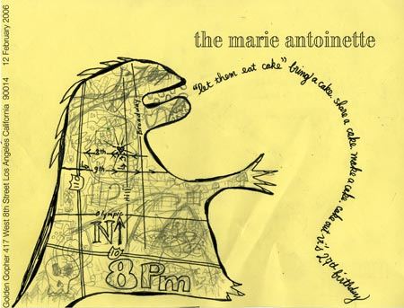
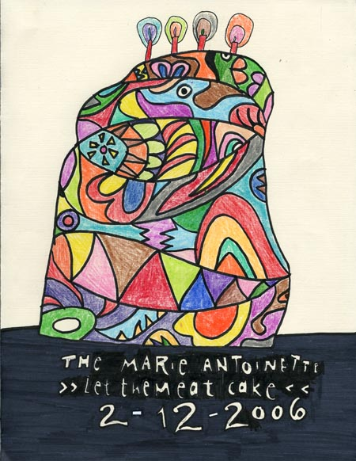
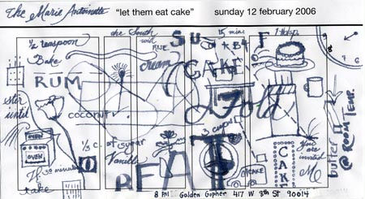

For my 27th birthday, I wanted to celebrate with friends and cake. I was already receiving three cakes from people and felt that if I was receiving three, why not receive more? If I receive more, why not share the bountiful cakes with all?

Thus, began this mad harrassment of people and asking people to come eat cake with me. In the end, I had 29 birthday cakes and a lot of people with stomachaches.

1. vi - 86 proof cake
2. dieu - angel food cake
3. jim - pecan strawberry cake
4. meghan - chocolate strawberry shortcake
5. kathy - vegan mint chocolate redhot cake
6. megan/patrick - midnight cake
7. laurel - german chocolate
8. christie - vi-shaped yellow cake
9. amy - fresh coconut
10. sonja - cheese cake
11. steven - ducle leche cheese cake
12. jessica/mina - chocolate cookie cake
13. jonathan - pound cake
14. chris/evelyn - rocky mountain coconut cake
15. carla - carrot cake
16. randall - magical black forest cake
17. ara - mocha cake
18. chris - stuffed cake doll
19. justin - middle finger red velvet cake
20. laurie - bear claw red velvet cake
21. scott - sweet potato pie
22. emily - guava and cheese pastry w/ picture of vi iced on top
23. kye - that duck packaged cake
24. joe - that duck packaged cake
25. justin - chocolate cake
26. ann-marie/cameron - grapefruit cake
27. vreje/mawde - chocolate cake (domed?)
28. gabe - raspberry ganache yellow cake
29. dawn - orange yellow cake
